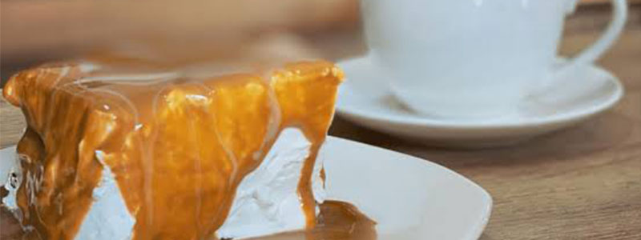
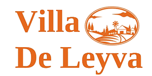
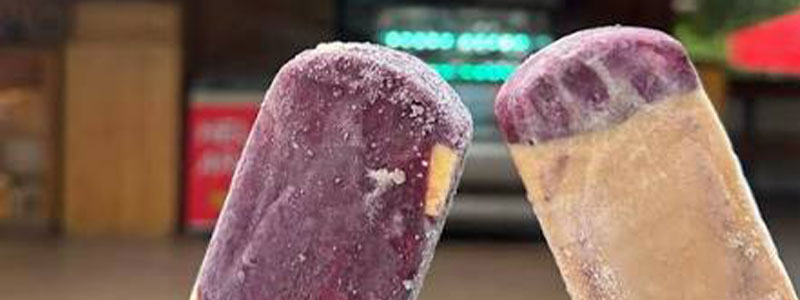
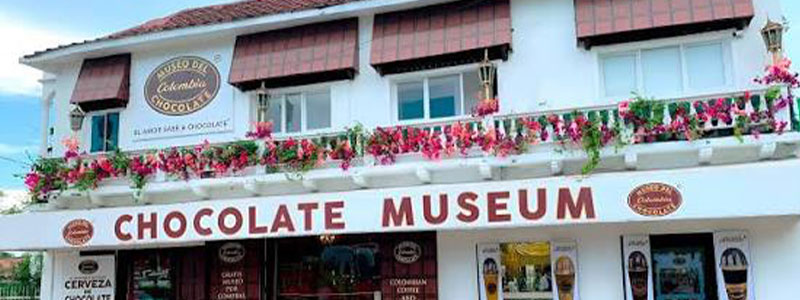
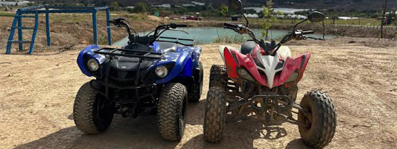

Donde Comer
En este buscador, vas a poder filtrar por nombre y tipo de establecimiento
ver mas

En este buscador, vas a poder filtrar por nombre y tipo de establecimiento
ver mas
En Villa de Leyva vas a encontrar platos típicos y comida de todo el mundo
ver mas
Conocé los espacios y mercados en donde podés disfrutar de la mejor gastronomía de la región
ver masDescubre la cerámica arquitectónica más grande del mundo, una obra única hecha totalmente a mano que combina arte, arquitectura y naturaleza.

Siente la adrenalina recorriendo el desierto en cuatrimoto, explorando senderos ecológicos, haciendo torrentismo o disfrutando del rappel.
ver más